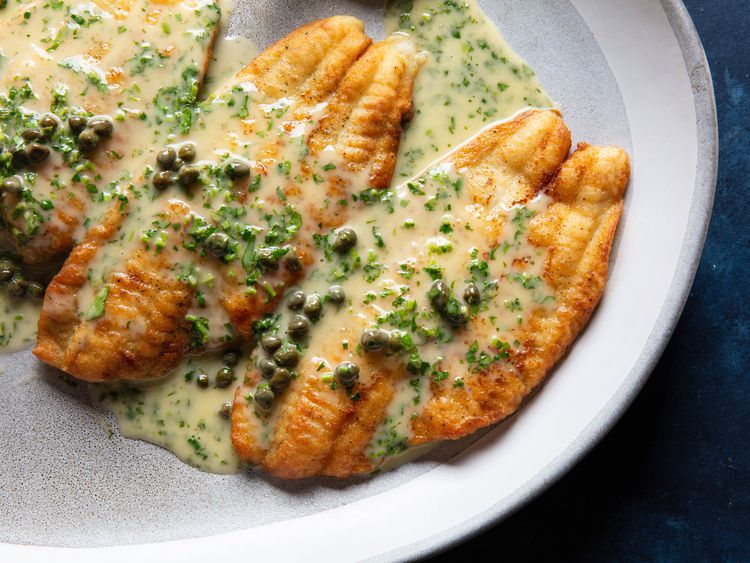

Fish Piccata

Description
Tender, pan-fried fish fillets with a bright, caper-studded lemon-butter sauce.
This recipe is from Serious Eats. All credits for the recipe go to Serious Eats. The content is used as part of web development training.
Ingredients
- 1/2 cup all purpose flour
- Four 6-ounce (170g) thin boneless, skinless white-fleshed fish fillets, about 1/2- to 3/4-inch thick, such as flounder, scrod, haddock, or branzino
- 1/4 tsp salt and freshly ground black pepper
- 60 ml vegetable oil
- 80 ml white wine
- 1 1/2 tablespoons (1/2 ounce; 15g) drained capers in vinegar
- 4 tablespoons (60g) unsalted butter, cut into tablespoon-size pieces, plus 1 tablespoon (15g) unsalted butter mashed into a paste with 1/4 teaspoon all-purpose flour
- 1 tablespoon (15ml) fresh lemon juice from 1 lemon
- 1 1/2 tablespoons (1/4 ounce; 8g) minced flat-leaf parsley leaves and tender stems
Steps
- In a wide, shallow bowl, spread flour in an even layer. Line a rimmed baking sheet with parchment paper. Season fish fillets all over with salt and pepper. Working with one piece of fish at a time, dredge fillets in flour, shaking off excess. Transfer to prepared baking sheet.
- In a large nonstick skillet, heat oil over medium-high heat until shimmering. Working in batches if necessary, add fish, presentation side down, and cook until well browned on on first side, 3 to 4 minutes (it's okay if the fillets are mostly cooked through at this point). Using two spatulas, if necessary, carefully flip each fillet and continue cooking until just cooked through and flesh is opaque throughout, 30 seconds to 1 minute. Carefully transfer fish, well-browned side up, to a serving platter and keep warm.
- Wipe out skillet, then return to medium-high heat, add wine, and bring to a boil. Cook until alcohol smell has mostly cooked off and wine is reduced by about half, about 2 minutes. Add capers, the 4 tablespoons plain unsalted butter, and butter-flour mixture and cook, whisking constantly, until butter has melted.
- Lower heat to medium and continue to simmer while whisking until a creamy, emulsified sauce has formed; when ready, it should coat the back of a spoon and a finger dragged through it should leave a trail. If the sauce over-reduces and breaks at any point, whisk in cold water 1 tablespoon at a time to bring it back together. Whisk in lemon juice and parsley. Season with salt, then pour sauce over fish fillets and serve right away.